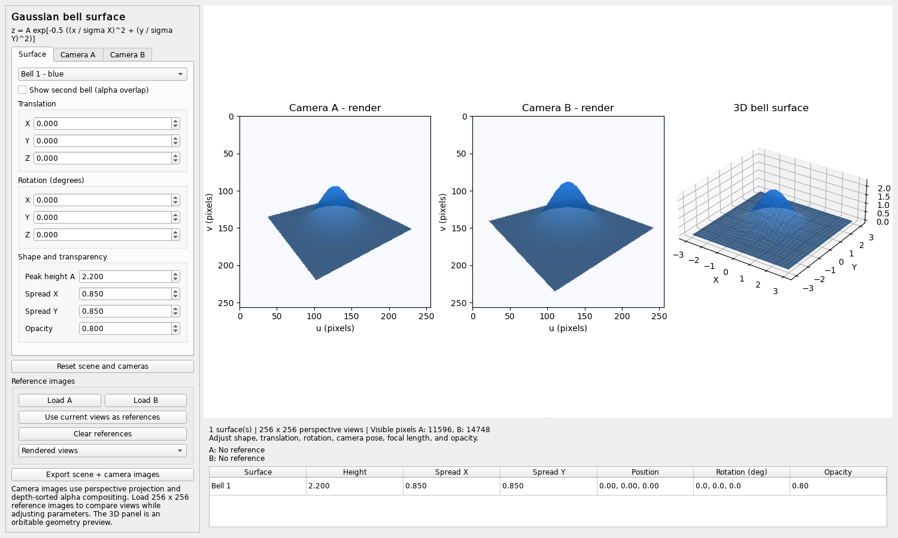
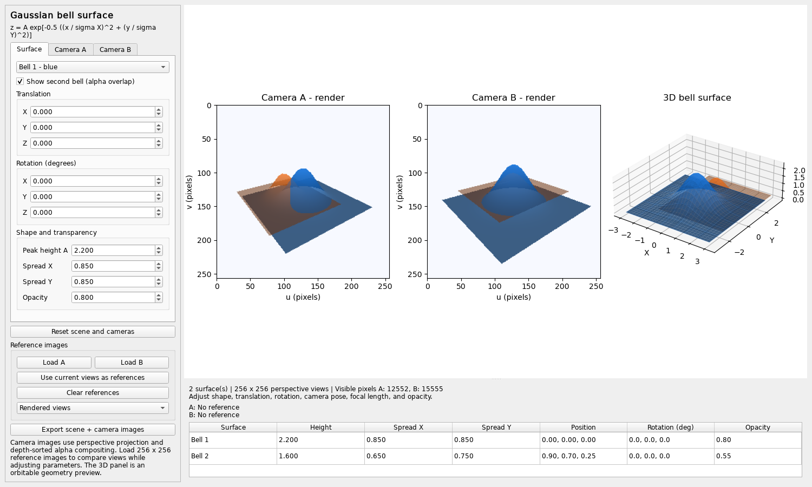

THE FOUNDATION
Defining the Gaussian surface
A bivariate Gaussian defines the height of a bell-shaped surface in 3D. Amplitude controls the peak, while independent X and Y spreads control its width. Rotation and translation position the resulting surface in the scene.
z = A · exp(−0.5 · ((x / σx)² + (y / σy)²))
A is the amplitude; σx and σy are the spreads along the two local axes.
The renderer samples a 29 × 29 grid spanning ±3.5 standard deviations along each local axis, then triangulates it. A height-based color tint makes the curvature visible, and the surface's tail ends at the grid boundary.
DISPLAY
Rendering two camera views
The display is a PySide6 desktop window with an embedded Matplotlib canvas. The NumPy renderer generates both camera images. It applies object transforms, converts vertices into camera coordinates, clips triangles against near and far planes, and projects them into each 256 × 256 image.
- Transform →Rotate and translate the mesh, then apply the inverse camera pose.
- Project →Clip triangles and map camera coordinates to image pixels.
- RasterizeInterpolate depth and color with perspective correction at pixel centers.
Each camera has independent position, translation, rotation, and focal-length controls. The orbitable Matplotlib panel provides a separate geometry preview; orbiting it leaves the two calibrated camera views unchanged.
BASE DEMO
Shape and camera pose
The PySide6 interface brings surface controls, camera settings, two rendered images, and the 3D preview into one workspace. Adjusting height, spread, pose, or opacity reveals how the same geometry appears from different viewpoints.


OVERLAPPING SURFACES
Compositing transparency by depth
An optional second orange bell makes overlap and intersection visible. The rasterization process sorts transparent fragments by depth at each pixel and composites them from far to near. Shared triangle edges contribute only once.
Cout = αfront · Cfront + (1 − αfront) · Cback
Opacity applies at each surface intersection as the front color blends over the accumulated background.


COMPARISON AND REPRODUCIBILITY
Comparing renders with references
Load reference images for each camera or capture the current views as references. The viewer displays RGB mean squared error and absolute difference images while parameters are adjusted manually. Reference comparison does not automatically fit the scene.
Export saves scene parameters and camera calibration in scene.json,
rendered PNG images, and NPZ arrays containing floating-point RGB, accumulated
alpha, and nearest contributing depth. The scene can be reloaded for repeatable renders.
Meaningful comparisons require matching camera calibration, framing, resolution, and color conventions. MSE uses stored RGB values without sRGB linearization; single-sample raster edges can show aliasing.
Section under construction
Machine learning
The current project implements rendering and manual image comparison.
The scene and camera parameters are independent of the interface, providing an integration point for model to supply estimated Gaussian parameters. Those parameters can then be rendered and compared with calibrated reference views.